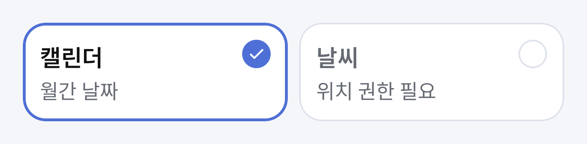
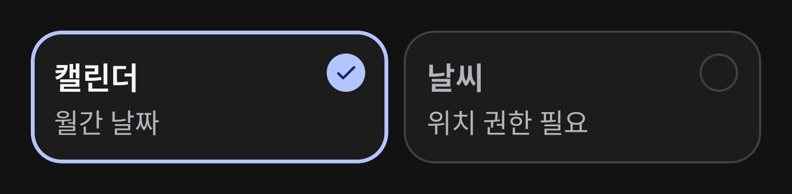

StudioSelectableCard
한 가지 값 또는 여러 항목을 카드에서 선택합니다.
- 컴포넌트 ID
studio-selectable-card- 분류
- 선택
- 구현
StudioSelectableCard·MyWidget/app/src/main/java/com/mywidget/editor/core/designsystem/component/StudioSelectors.kt:338- 주요 API
- title, selected, onClick, layout, indicator, visual, subtitle, enabled, role, supportingContent
- 지원 상태
- 선택
- 미선택
- 비활성 사유
- 읽기 전용
- 변형
- HorizontalRow
- VerticalCenter
- VerticalStart
- None·CheckBadge·Radio
- 크기
- 최소 48×48dp
- 기본 반경 16dp·컴팩트 12dp
- 경계 1dp·선택 2dp
- 테마·토큰
- StudioCardDefaults
- primary
- outlineVariant
- LocalStudioControlDensity
- 접근성·사용 규칙
- RadioButton 또는 Checkbox 역할을 설정하고 비활성 원인을 부제목에 보여줄 수 있습니다.
- 공통 사용 여부
- 블록 추가, 글꼴, 도형, 플러그인, 상태·동작 옵션 등에서 사용
- 설계 품질
- 선택 상태와 미리보기 슬롯이 분리됨
- 판단
- 유지
- 판단 근거
- 대시보드 탐색 행과 선택 카드의 역할을 구분합니다.
- 구현·문서
- 현재 소스 위치와 심볼 확인
- 렌더링
- 네이티브 캡처 있음
코드 예시
Row(horizontalArrangement = Arrangement.spacedBy(8.dp)) {
StudioSelectableCard("캘린더", true, {}, Modifier.weight(1f), layout = StudioCardLayout.VerticalStart,
indicator = StudioCheckIndicator.CheckBadge, subtitle = "월간 날짜")
StudioSelectableCard("날씨", false, {}, Modifier.weight(1f), layout = StudioCardLayout.VerticalStart,
indicator = StudioCheckIndicator.CheckBadge, subtitle = "위치 권한 필요", enabled = false)
}Android 네이티브 예시
아래 캡처에 표시된 상태와 기기 조건을 확인했습니다.

411 × 891 dp · 560 dpi · 글꼴 1배 · API 35 · ko-KR
캡처 기준 HEAD
28c96a452 · 소스 지문 2926a62326fe · 2026-11-13T13:54:53.964821Z
411 × 891 dp · 560 dpi · 글꼴 1배 · API 35 · ko-KR
캡처 기준 HEAD
28c96a452 · 소스 지문 2926a62326fe · 2026-11-13T13:54:53.964821Z사용 화면
- 블록 추가
- 글자 상세와 세부 조판
- 데이터 인스펙터
- 모양 인스펙터
- 위젯 크기 개요·초기화
- 목록 편집·표시·체크 설정
- 목록 항목과 템플릿
- 아이콘 라이브러리·관리
- 이미지 관리와 표시
- 수동 목표 편집
- 기능 연결 카탈로그
- 직접 입력과 연결 전환
- 선택형 상세 옵션
- 날짜 구성 요소 선택
- 시간대 검색
- 캘린더 일정 목록
- 다음 일정
- 달력 연결 설정
- 달력 일정 연결 안내와 캘린더 선택
- 위젯 값 읽을 블록
- 위젯 값의 속성·표시 옵션
- 일반 소스 옵션
- 터치 동작 1단계 · 대상
- 터치 동작 2단계 · 상태
- 터치 동작 3단계 · 액션
- 값 변경·기능 설정·사진 교체 액션
- 진행률 증가·감소 액션
- 목록 고정 항목 추가 액션
- 목록 항목 삭제 액션
- 설치 위젯 기능 연결 옵션
- 디자인 시스템 쇼케이스